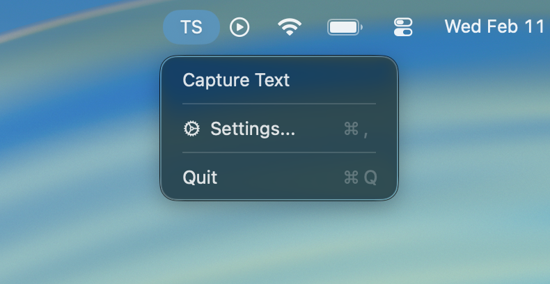

Why use it
Text Shot is built for quick text extraction from videos, PDFs, images, code samples, and UI screens without sending anything to a cloud OCR service.
Native macOS OCR utility
Text Shot lives in your menu bar, lets you draw a region, runs OCR on-device, and puts the extracted text on your clipboard right away.

Text Shot is built for quick text extraction from videos, PDFs, images, code samples, and UI screens without sending anything to a cloud OCR service.
Trigger the shortcut, drag over a region, let OCR reconstruct the text, and paste the result wherever you need it.
Native macOS UI, local OCR, menu bar controls, custom shortcut support, and Sparkle-powered update delivery.
Highlights
Project links